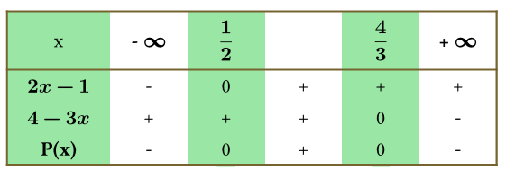
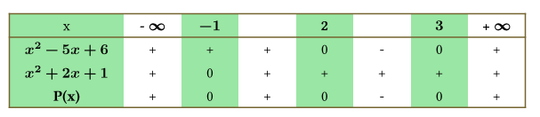
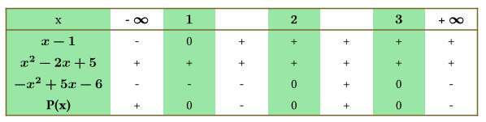
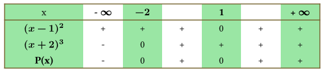
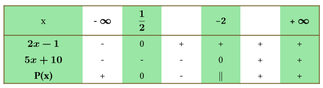

1 Ανισώσεις γινόμενο και ανισώσεις πηλίκο
1.1 Πρόσημο γινομένου
Η μελέτη του προσήμου ενός γινομένου \(P(x) = A(x) \cdot B(x) \cdot \dots \cdot \Phi(x)\) βασίζεται στον προσδιορισμό του προσήμου κάθε παράγοντα ξεχωριστά και τη συνδυαστική τους μελέτη μέσω ενός πίνακα προσήμων.
Θεωρία και Ορισμοί
Έχουμε μάθει ….
Α. Πρόσημο Πρωτοβάθμιου Παράγοντα (\(ax + \beta\), \(a \neq 0\)):
Μηδενίζεται για \(x = -\dfrac{\beta}{a}\).
Είναι ομόσημο του \(a\) για τιμές του \(x\) μεγαλύτερες από τη ρίζα (\(x > -\dfrac{\beta}{a}\)).
Είναι ετερόσημο του \(a\) για τιμές του \(x\) μικρότερες από τη ρίζα (\(x < -\dfrac{\beta}{a}\)).
Β. Πρόσημο Τριωνύμου (\(ax^2 + \beta x + \gamma\), \(a \neq 0\)):
Το πρόσημο του τριωνύμου εξαρτάται από τη διακρίνουσα \(\Delta = \beta^2 - 4a\gamma\):
- Αν \(\Delta > 0\): Το τριώνυμο έχει δύο άνισες πραγματικές ρίζες \(x_1, x_2\). Είναι ετερόσημο του \(a\) για \(x \in (x_1, x_2)\) (εντός των ριζών) και ομόσημο του \(a\) εκτός των ριζών.
- Αν \(\Delta = 0\): Το τριώνυμο έχει μια διπλή πραγματική ρίζα \(x_0 = -\frac{\beta}{2a}\). Είναι ομόσημο του \(a\) για κάθε \(x \neq x_0\) και μηδενίζεται για \(x = x_0\).
- Αν \(\Delta < 0\): Το τριώνυμο δεν έχει πραγματικές ρίζες και είναι ομόσημο του \(a\) για κάθε \(x \in \mathbb{R}\).
1.2 Μεθοδολογία Μελέτης Γινομένου
Για να βρούμε το πρόσημο του γινομένου \(P(x)\) ακολουθούμε τα εξής βήματα:
Βρίσκουμε τις ρίζες κάθε παράγοντα \(A(x), B(x), \dots\) λύνοντας τις αντίστοιχες εξισώσεις.
Κατασκευάζουμε έναν συγκεντρωτικό πίνακα προσήμων όπου:
- Στην πρώτη γραμμή τοποθετούμε όλες τις ρίζες κατά αύξουσα σειρά.
- Σε κάθε επόμενη γραμμή τοποθετούμε το πρόσημο κάθε παράγοντα ξεχωριστά.
- Στην τελευταία γραμμή υπολογίζουμε το πρόσημο του γινομένου \(P(x)\) εφαρμόζοντας τον κανόνα των προσήμων (το γινόμενο είναι θετικό αν το πλήθος των αρνητικών παραγόντων είναι άρτιο, και αρνητικό αν είναι περιττό).
1.3 Παραδείγματα
Περίπτωση Α: Πρωτοβάθμιοι παράγοντες
Έστω \(P(x) = (2x - 1)(4 - 3x)\).
Ρίζες: \(2x-1=0 \Rightarrow x=1/2\) και \(4-3x=0 \Rightarrow x=4/3\).
Πίνακας: Για \(x \in (1/2, 4/3)\), ο πρώτος παράγοντας είναι θετικός και ο δεύτερος θετικός, άρα \(P(x) > 0\). Για \(x < 1/2\) ή \(x > 4/3\), οι παράγοντες είναι ετερόσημοι, άρα \(P(x) < 0\).

Περίπτωση Β: Τριώνυμα με \(\Delta > 0\) και \(\Delta = 0\)
Έστω \(P(x) = (x^2 - 5x + 6)(x^2 + 2x + 1)\).
Το \(x^2 - 5x + 6\) έχει ρίζες 2 και 3.
Το \(x^2 + 2x + 1\) έχει διπλή ρίζα το -1.
Το γινόμενο \(P(x)\) είναι θετικό για \(x < 2\) (εκτός του -1) και για \(x > 3\), ενώ είναι αρνητικό για \(x \in (2, 3)\).

Περίπτωση Γ: Συνδυασμός παραγόντων και τριωνύμου με \(\Delta < 0\)
Έστω \(P(x) = (x - 1)(x^2 - 2x + 5)(-x^2 + 5x - 6)\).
Ρίζα \(x-1\): \(x=1\). θετικό για \(x>1\)
Τριώνυμο \(x^2 - 2x + 5\): \(\Delta = -16 < 0\) και \(a=1>0\), άρα είναι πάντα θετικό.
Τριώνυμο \(-x^2 + 5x - 6\): \(\Delta = 1\) και ρίζες 2, 3. Επειδή \(a=-1<0\), είναι θετικό στο \((2, 3)\) και αρνητικό αλλού.
Ο πίνακας δείχνει ότι \(P(x) \leq 0\) για \(x \in[1,2] \cup [3, +\infty)\).

1.4 Όταν ένα γινόμενο \(P(x)\) περιέχει παράγοντα υψωμένο σε δύναμη,
η μελέτη του προσήμου του διαφοροποιείται ανάλογα με το αν ο εκθέτης της δύναμης είναι άρτιος ή περιττός.
Συγκεκριμένα, ισχύουν οι εξής κανόνες:
1.4.1 Παράγοντας με Άρτιο Εκθέτη (\(2\nu\))
Πρόσημο: Κάθε πραγματικός αριθμός υψωμένος σε άρτια δύναμη είναι πάντα μη αρνητικός (\(a^{2\nu} \geq 0\)),. Αυτό σημαίνει ότι ο παράγοντας αυτός είναι θετικός για κάθε τιμή του \(x\), εκτός από τις τιμές που μηδενίζουν τη βάση του,.
Επίδραση στο Γινόμενο: Επειδή ο παράγοντας είναι μόνιμα θετικός (εκτός από τις ρίζες του), δεν επηρεάζει το πρόσημο του γινομένου στα διαστήματα μεταξύ των ριζών,.
Στον Πίνακα Προσήμων: Στη γραμμή που αντιστοιχεί σε αυτόν τον παράγοντα, τοποθετούμε το πρόσημο (+) σε όλα τα διαστήματα, σημειώνοντας όμως με «0» τη θέση όπου μηδενίζεται η βάση του,.
1.4.2 Παράγοντας με Περιττό Εκθέτη (\(2\nu+1\))
Πρόσημο: Μια δύναμη με περιττό εκθέτη διατηρεί το ίδιο πρόσημο με τη βάση της,. Αν η βάση είναι θετική, η δύναμη είναι θετική· αν η βάση είναι αρνητική, η δύναμη είναι αρνητική,.
Επίδραση στο Γινόμενο: Ο παράγοντας αυτός συμπεριφέρεται ακριβώς όπως ο αντίστοιχος πρωτοβάθμιος ή δευτεροβάθμιος παράγοντας χωρίς τη δύναμη.
Στον Πίνακα Προσήμων: Η μελέτη γίνεται κανονικά, όπως θα γινόταν αν ο εκθέτης ήταν η μονάδα (1).
1.4.3 Μεθοδολογία και Παρατηρήσεις
Για τη διευκόλυνση της μελέτης ενός γινομένου με δυνάμεις, μπορείτε να ακολουθήσετε τα εξής:
Απλοποίηση: Μπορείτε να θεωρήσετε ότι το γινόμενο \(P(x)\) είναι ομόσημο με ένα άλλο γινόμενο \(P_1(x)\), το οποίο προκύπτει αν παραλείψετε τους παράγοντες με άρτιο εκθέτη και αντικαταστήσετε τους παράγοντες με περιττό εκθέτη από τις βάσεις τους (υψωμένες στην πρώτη δύναμη).
Προσοχή στις Ρίζες: Παρόλο που οι άρτιες δυνάμεις δεν αλλάζουν το πρόσημο, οι τιμές που μηδενίζουν τη βάση τους αποτελούν ρίζες του συνολικού γινομένου και πρέπει να συμπεριλαμβάνονται στον τελικό πίνακα,.
Παράδειγμα: Αν έχουμε την παράσταση \(P(x) = (x-1)^2(x+2)^3\), ο παράγοντας \((x-1)^2\) είναι πάντα \(\geq 0\) και δεν αλλάζει το πρόσημο, ενώ ο \((x+2)^3\) έχει το ίδιο πρόσημο με το \(x+2\),. Έτσι, το \(P(x)\) θα είναι θετικό όταν \(x+2 > 0\) (δηλαδή \(x > -2\)) και αρνητικό όταν \(x < -2\), με εξαίρεση την τιμή \(x=1\) όπου μηδενίζεται.

1.5 Ανισώσεις της μορφής Α(x) · Β(x) · … · Φ(x) > 0 (< 0)
κάνουμε εφαρμογή των όσων είπαμε παραπάνω
1.6 Ανισώσεις της μορφής \(\dfrac{A(x)}{B(x)}>0 \quad η \quad (<0), (\ge 0), (\le 0)\)
Η επίλυση των ανισώσεων με κλάσματα (ρητές ανισώσεις) βασίζεται στην αρχή ότι το πηλίκο δύο αριθμών έχει το ίδιο πρόσημο με το γινόμενό τους. Η μεθοδολογία ακολουθεί τα εξής βασικά βήματα:
Περιορισμοί (Πεδίο Ορισμού)
Πριν από οποιαδήποτε πράξη, πρέπει να εξασφαλίσουμε ότι η ανίσωση ορίζεται. Απαιτούμε ο παρονομαστής να είναι διάφορος του μηδέν (\(B(x) \neq 0\)). Οι τιμές που μηδενίζουν τον παρονομαστή εξαιρούνται πάντα από τις λύσεις.
Μετατροπή σε Μορφή Πηλίκου με το Μηδέν
Αν η ανίσωση δεν είναι ήδη στη μορφή \(\dfrac{A(x)}{B(x)} > 0\) (ή \(<, \geq, \leq\)), τότε:
Μεταφέρουμε όλους τους όρους στο πρώτο μέλος, ώστε το δεύτερο μέλος να γίνει μηδέν.
Κάνουμε τα κλάσματα ομώνυμα και εκτελούμε τις πράξεις στον αριθμητή, ώστε να καταλήξουμε σε ένα ενιαίο κλάσμα.
ΠΡΟΣΟΧΗ: Δεν κάνουμε ποτέ απαλοιφή παρονομαστών (χιαστί πολλαπλασιασμό), διότι το πρόσημο του παρονομαστή μπορεί να αλλάζει ανάλογα με το \(x\), γεγονός που θα επηρέαζε τη φορά της ανίσωσης.
Μετατροπή σε Ανίσωση Γινομένου
Επειδή το πηλίκο \(\dfrac{A(x)}{B(x)}\) είναι ομόσημο του γινομένου \(A(x) \cdot B(x)\), η ανίσωση μετατρέπεται ως εξής:
\(\dfrac{A(x)}{B(x)} > 0 \iff A(x) \cdot B(x) > 0\)
\(\dfrac{A(x)}{B(x)} \geq 0 \iff A(x) \cdot B(x) \geq 0\) με τον περιορισμό \(B(x) \neq 0\).
Πίνακας Προσήμων
Λύνουμε την ανίσωση γινομένου που προέκυψε χρησιμοποιώντας πίνακα προσήμων:
Βρίσκουμε τις ρίζες του αριθμητή \(A(x)\) και του παρονομαστή \(B(x)\).
Τοποθετούμε τις ρίζες σε αύξουσα σειρά στον πίνακα.
Προσδιορίζουμε το πρόσημο κάθε παράγοντα χωριστά.
Στην τελευταία γραμμή, βρίσκουμε το πρόσημο του κλάσματος. Στις τιμές που μηδενίζεται ο παρονομαστής, βάζουμε διπλή γραμμή (||), που σημαίνει ότι η παράσταση δεν ορίζεται εκεί.
Τελική Λύση
Επιλέγουμε τα διαστήματα που ικανοποιούν την ανίσωση (θετικά ή αρνητικά), προσέχοντας να εξαιρέσουμε τις ρίζες του παρονομαστή ακόμα και αν η ανίσωση περιλαμβάνει το σύμβολο της ισότητας (\(\geq\) ή \(\leq\)).
Παράδειγμα: Στην ανίσωση \(\dfrac{2x-1}{5x+10} > 0\), ο παρονομαστής μηδενίζεται στο \(x=-2\), οπότε αυτό το σημείο εξαιρείται με διπλή γραμμή στον πίνακα, και η ανίσωση λύνεται ως \((2x-1)(5x+10) > 0\).

Άρα \(\dfrac{2x-1}{5x+10} > 0\) για \(x \in (- \infty,\dfrac{1}{2})\cup(-2,+\infty)\)
1.7 Η επίλυση ανισώσεων που περιέχουν απόλυτα και τριώνυμα μαζί
απαιτεί τον συνδυασμό των ιδιοτήτων των απόλυτων τιμών με τη θεωρία προσήμου του τριωνύμου. Η μεθοδολογία εξαρτάται από τη μορφή της ανίσωσης και ακολουθεί τρεις βασικούς δρόμους:
Χρήση Βασικών Ιδιοτήτων (Για μορφές \(|f(x)| < \theta\) ή \(|f(x)| > \theta\))
Αν η ανίσωση έχει το απόλυτο απομονωμένο στο ένα μέλος και έναν αριθμό ή παράσταση στο άλλο, χρησιμοποιούμε τις εξής ισοδυναμίες (για \(\theta > 0\)):
- \(|f(x)| < \theta \iff -\theta < f(x) < \theta\): Δημιουργείται ένα σύστημα δύο ανισώσεων που πρέπει να συναληθεύουν.
- \(|f(x)| > \theta \iff f(x) < -\theta\) ή \(f(x) > \theta\): Η τελική λύση είναι η ένωση των λύσεων των δύο ανισώσεων.
- Παράδειγμα: Στην ανίσωση \(|x^2 - 5x + 5| < 1\), θα λύναμε το σύστημα \(-1 < x^2 - 5x + 5 < 1\).
Μέθοδος Τετραγωνισμού (Για μορφές \(|f(x)| < |g(x)|\))
Όταν υπάρχουν απόλυτα και στα δύο μέλη, και επειδή οι απόλυτες τιμές είναι μη αρνητικές, μπορούμε να υψώσουμε στο τετράγωνο για να απαλλαγούμε από τα απόλυτα (αφού \(|a| < |b| \iff a^2 < b^2\)).
* Η ανίσωση μετατρέπεται σε \(f^2(x) < g^2(x) \iff (f(x) - g(x))(f(x) + g(x)) < 0\).
* Αυτή η μορφή οδηγεί συχνά σε τριώνυμα ή γινόμενα παραγόντων που μελετώνται με πίνακα προσήμων.
Διαχωρισμός Περιπτώσεων (Η Γενική Μέθοδος)
Αν ο άγνωστος \(x\) υπάρχει και έξω από το απόλυτο ή αν υπάρχουν περισσότερα από ένα απόλυτα, ακολουθούμε τη διαδικασία εξαγωγής των απολύτων:
Βρίσκουμε τις ρίζες των παραστάσεων που βρίσκονται μέσα στα απόλυτα (π.χ. αν έχουμε \(|x^2-x|\), οι ρίζες του τριωνύμου είναι 0 και 1).
Χωρίζουμε το \(\mathbb{R}\) σε διαστήματα με βάση αυτές τις ρίζες.
Σε κάθε διάστημα ξεχωριστά, αντικαθιστούμε το απόλυτο με την παράσταση ή την αντίθετή της, ανάλογα με το αν είναι θετική ή αρνητική σε αυτό το διάστημα.
Λύνουμε την ανίσωση που προκύπτει (η οποία είναι πλέον ένα απλό τριώνυμο) και συναληθεύουμε το αποτέλεσμα με τον περιορισμό του διαστήματος στο οποίο εργαζόμαστε.
Η τελική λύση είναι η ένωση των δεκτών λύσεων από όλες τις περιπτώσεις.
1.8 Ασκήσεις
Α. Να βρεθεί το πρόσημο των παρακάτω παραστάσεων για τις διάφορες τιμές του \(x \in \mathbb{R}\):
\(P(x) = (x + 1)^2(x + 3)^2(2x + 4)\)
\(P(x) = (2x - 3)(x + 2)(x + 1)^3(x - 5)\)
\(P(x) = (x^2 + 3x + 2)(x + 1)(x^2 - 5x + 6)(x - 3)\)
\(P(x) = (x^2 - 4x + 3)(x^2 + 6x + 9)\)
\(P(x) = (x - 2)(x^2 + x + 1)(x^2 - 7x + 12)\)
\(P(x) = (x - 1)^3(x^2 - 6x + 9)(x^2 - 3x)(x^2 + 3x + 5)\)
\(P(x) = (x^2 - 16)(x^2 - 6x + 8)(2 - x)\)
\(P(x) = (2x^2 - 7x - 4)(3x^2 - 16x + 5)\)
\(P(x) = (x - 2)(x + 2x - 8)(x + x + 1)\)
\(P(x) = (2x - 1)(-x^2 + 2x - 1)(x + 1)\)
Β. Να βρείτε το πρόσημο των παρακάτω παραστάσεων \(P(x)\) για τις διάφορες τιμές του \(x \in \mathbb{R}\):
- \(P(x) = (x + 1)^2(x + 3)^2(2x + 4)\)
- \(P(x) = (2x - 3)(x + 2)(x + 1)^3(x - 5)\)
- \(P(x) = (x + 1)^2(2x^2 + 1)(x^2 + 3x + 5)(x - 2)\)
- \(P(x) = (x^2 + 3x + 2)(x + 1)(x^2 - 5x + 6)(x - 3)\)
- \(P(x) = (2x - 5)(x^2 - 6x + 8)(x^2 - 5x + 4)\)
- \(P(x) = (2x^2 - 7x - 4)(3x^2 - 16x + 5)\)
- \(P(x) = (3 - x)(x^2 - 4x + 3)\)
- \(P(x) = (x - 1)(x^2 - x + 2)(2 - x)\)
- \(P(x) = (x + 2)(2x - 1)(x^2 - 6x)\)
- \(P(x) = (x - 1)^2(x - 4)(x^2 - 3x + 2)\)
Γ. Να λύσετε στο \(\mathbb{R}\) τις παρακάτω ανισώσεις:
\((x - 1)(x + 1)(x + 2)(3x - 1) \leq 0\) (Γινόμενο τεσσάρων πρωτοβάθμιων παραγόντων)
\((x^2 - 3x + 2)(x^2 + 5x + 6) > 0\) (Γινόμενο δύο τριωνύμων με διακρίνουσα \(\Delta > 0\))
\((x - 2)(x^2 + x + 1)(x^2 - 7x + 12) < 0\) (Περιέχει τριώνυμο με \(\Delta < 0\), το οποίο διατηρεί σταθερό πρόσημο)
\((x - 1)^2(x + 1) > 0\) (Περιέχει παράγοντα με άρτια δύναμη που επηρεάζει μόνο τις ρίζες)
\((x - 1)^3(x - 2)(x + 3)(x - 3) > 0\) (Περιέχει παράγοντα με περιττή δύναμη, ο οποίος συμπεριφέρεται ως πρωτοβάθμιος)
\((2x^2 + 3)(x + 1)(x - 2)(3x^2 - 10x + 3)(x^2 + 1) < 0\) (Σύνθετη μορφή με παράγοντες που δεν μηδενίζονται ποτέ)
\((x - 1)(x + 1)^3 x^2 (2x + 1)(x^2 + x + 3) > 0\) (Συνδυασμός δυνάμεων και τριωνύμων χωρίς πραγματικές ρίζες)
\((x - 1)(x^2 - 2x + 5)(-x^2 + 5x - 6) \leq 0\) (Μελέτη προσήμου με τριώνυμο που έχει αρνητικό συντελεστή \(a\))
\((2x - 1)(-x^2 + 2x - 1)(x + 1) > 0\) (Περιέχει τριώνυμο που είναι τέλειο τετράγωνο με αρνητικό συντελεστή)
\((x - 2)(x^2 - 7x + 6)(-x^2 - 2x + 8)(x - 1) > 0\) (Γινόμενο πολλών παραγόντων που απαιτούν παραγοντοποίηση)
Δ. Να λύσετε στο \(\mathbb{R}\) τις παρακάτω ανισώσεις:
- \(\dfrac{x + 1}{7 - x} > 2\)
(Απαιτείται μεταφορά του 2 στο πρώτο μέλος και μετατροπή σε ομώνυμα κλάσματα).
- \(\dfrac{x^2 - 10x + 16}{x - 2} < 0\)
(Προσοχή στην εξαίρεση της τιμής που μηδενίζει τον παρονομαστή).
- \(\dfrac{3x + 5}{3x - 7} < 0\)
(Βασική μορφή πηλίκου δύο πρωτοβάθμιων παραγόντων).
- \(\dfrac{x^2 - x + 1}{x^2 + x + 2} \leq 2\)
(Περιλαμβάνει τριώνυμα· ελέγξτε αν κάποιο έχει διακρίνουσα \(\Delta < 0\)).
- \(\dfrac{4x - 1}{23x - x^2} \geq 0\)
(Παραγοντοποιήστε τον παρονομαστή για να βρείτε τις ρίζες του).
- \(\dfrac{x^2 + 10x + 21}{2x^2 + 12x + 18} > 0\)
(Συνδυασμός δύο τριωνύμων· εξετάστε αν υπάρχουν διπλές ρίζες ή κοινοί παράγοντες).
- \(\dfrac{-15x^2 + x + 2}{2x^2 - x + 5} > 0\)
(Περιέχει τριώνυμο με αρνητικό συντελεστή \(\alpha\)).
- \(\dfrac{x^2 - 5x + 6}{x - 3} > 5\)
(Μην κάνετε απαλοιφή παρονομαστή· μεταφέρετε το 5 στο πρώτο μέλος).
- \(\dfrac{4x - 3}{9x^2 - 4} - \dfrac{1}{3x + 2} - \dfrac{3}{2 - 3x} < 0\)
(Απαιτείται ανάλυση των παρονομαστών σε γινόμενο και εύρεση Ε.Κ.Π.).
- \(\dfrac{x + 8}{x^2 + 1} < \dfrac{2x + 6}{2x^2 - 5x + 3}\)
(Πιο σύνθετη μορφή που απαιτεί προσεκτικές πράξεις για τη δημιουργία ενός ενιαίου κλάσματος).
Ε. Λύστε τις παρακάτω ασκήσεις
- Εξίσωση με απόλυτα και κλάσματα: Να λύσετε την εξίσωση: \(\dfrac{|x+1|}{|x-2|} = \dfrac{1}{2}\).
(Υπόδειξη: Θέστε τους περιορισμούς για τον παρονομαστή και χρησιμοποιήστε την ιδιότητα \(|a|=|b| \iff a=b\) ή \(a=-b\)).
- Υπολογισμός τιμής παράστασης: Για κάθε πραγματικό αριθμό \(x\) με την ιδιότητα \(5 < x < 10\), να υπολογίσετε την τιμή της παράστασης: \(A = \dfrac{x-5}{|x-5|} + \dfrac{x-10}{|x-10|}\).
(Υπόδειξη: Εξετάστε το πρόσημο των παραστάσεων μέσα στα απόλυτα βάσει του περιορισμού του \(x\)).
- Αποδεικτική άσκηση (Ανισότητα): Αν \(a, \beta \in \mathbb{R} - \{0\}\), να αποδείξετε ότι: \(\dfrac{|a|}{|\beta|} + \dfrac{|\beta|}{|a|} \geq 2\).
(Υπόδειξη: Μπορείτε να χρησιμοποιήσετε την ιδιότητα ότι για κάθε θετικό αριθμό \(t\) ισχύει \(t + \dfrac{1}{t} \geq 2\)).
- \(\displaystyle \frac{|x+1|}{|x+2|} \leq 1\)
(Υπόδειξη: Θέστε τον περιορισμό \(x \neq -2\). Μπορείτε να μεταφέρετε το 1 στο πρώτο μέλος και να κάνετε τα κλάσματα ομώνυμα ή, επειδή οι όροι είναι μη αρνητικοί, να χρησιμοποιήσετε την ιδιότητα \(|a| \leq |b| \iff a^2 \leq b^2\)).
- \(\displaystyle \left| \frac{3x-4}{2x-5} \right| < 2\)
(Υπόδειξη: Πρέπει \(x \neq 5/2\). Η ανίσωση είναι ισοδύναμη με \(\frac{|3x-4|}{|2x-5|} < 2\), η οποία οδηγεί στην \(|3x-4| < 2|2x-5|\). Λύνεται είτε με ύψωση στο τετράγωνο είτε με πίνακα προσήμων για τις απόλυτες τιμές).
- \(\displaystyle \frac{1 - |x|}{|2x - 1| - 3} > 1\)
(Υπόδειξη: Βρείτε τις τιμές που μηδενίζουν τις παραστάσεις μέσα στα απόλυτα (\(x=0\) και \(x=1/2\)) καθώς και τις τιμές που μηδενίζουν τον παρονομαστή. Χρησιμοποιήστε τη μέθοδο των διαστημάτων (πίνακας προσήμων) για να απαλλαγείτε από τα απόλυτα σε κάθε διάστημα χωριστά).
- \(\displaystyle \frac{|x - 4|}{3} + \frac{|4 - x|}{2} < \frac{|2x - 8|}{4} + 1\) (Υπόδειξη: Παρατηρήστε ότι \(|4-x| = |x-4|\) και \(|2x-8| = 2|x-4|\). Η ανίσωση μπορεί να απλοποιηθεί σημαντικά αν θέσετε \(|x-4| = \omega\) και λύσετε πρώτα ως προς \(\omega\)).
ΚΑΛΗ ΜΕΛΕΤΗ!